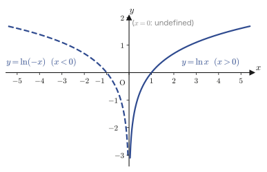
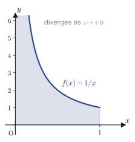
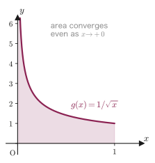
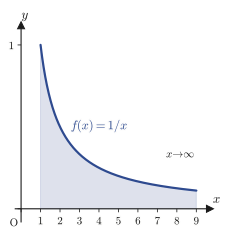
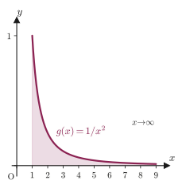
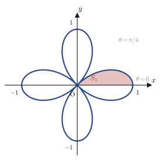
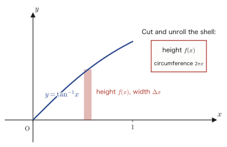
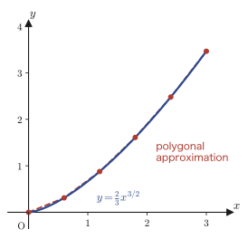

Chapter 5Basic Integration Formulas and Properties of Definite Integrals
In the previous chapter, in the course of building up Taylor's theorem starting from the first-order approximation, we used the “fundamental theorem of calculus” $\displaystyle\int_a^{b} f'(x)\,dx = f(b)-f(a)$ ahead of time, with an explicit disclaimer, as a fact learned in high school mathematics (Mathematics III, a course in the Japanese high-school curriculum). There we borrowed only the idea that “integration is the inverse operation of differentiation” and postponed the formal definition to this chapter. Now, at last, we put integration itself in the leading role.
In the first half of this chapter (Sections 5.1 and 5.2), we retrace the differentiation formulas we have acquired in the earlier chapters one by one in the reverse direction, and organize the answers to the question “which function has this form as its derivative?” into a collection of indefinite integral formulas. This is, to borrow the words of the original notes, the standpoint that “integration is the inverse of differentiation.” But some things cannot be explained from this standpoint alone—for example, when we find the area enclosed by the graph of $y=x^2$ and the $x$-axis, what we are really doing is not computing an “inverse operation of differentiation” at all, but carrying out an entirely different operation: “adding up the areas of infinitely many thin rectangles and taking a limit.” That these two operations (integration as the inverse operation of differentiation, and integration as area) in fact coincide is not self-evident; it is a theorem that must be proved. So in Section 5.3 we return to the formal definition of the definite integral by the Riemann-sum method (evaluating an integral as the limit of Riemann sums) and pin down the meaning of “integration as area.” Once we have this viewpoint, we can also understand naturally the improper integrals and improper integrals over infinite intervals treated in Section 5.4—integrals in which the function diverges at an endpoint, or in which the interval of integration extends to infinity. Finally, in Section 5.5, we apply integration to concrete geometric problems: areas, volumes, surface areas, and lengths of curves.
- Twelve basic indefinite integral formulas (such as $\displaystyle\int\frac1x\,dx=\ln|x|+C$) obtained by reversing the differentiation formulas for logarithmic, trigonometric, exponential, inverse trigonometric, and hyperbolic functions, and their proofs (verified by differentiating)
- Three properties of definite integrals: $\displaystyle\int_\alpha^\beta(x-\alpha)(x-\beta)\,dx=-\frac16(\beta-\alpha)^3$ (the 1/6 formula), the mean value theorem for integrals, and Schwarz's inequality
- The formal definition of the definite integral $\displaystyle\int_a^b f(x)\,dx$ by the Riemann sum $\displaystyle\sum_{k=1}^n f(t_k)\Delta x_k$, and the squeeze argument using upper and lower sums
- The definitions of improper integrals (where the function diverges at an endpoint of the interval) and of improper integrals over infinite intervals (where the interval extends to infinity), together with concrete examples showing that they may converge and may also diverge
- The area of a figure given by a polar equation, $S=\dfrac12\displaystyle\int r^2\,d\theta$; the volume of a solid of revolution (the disk method and the “Baumkuchen” method, which is named after the layered cake and is also known as the shell method); the surface area of a solid of revolution; and the formula for the length of a curve and its derivation
Source notes: Yasuhide Mochizuki, Mathematics Notes: Calculus, pp. 39–50.
5.1 Basic Indefinite Integral Formulas — Reversing Differentiation
When differentiating a function $F(x)$ gives $f(x)$, we call $F(x)$ an antiderivative of $f(x)$. All the functions of the form $F(x)+C$ ($C$ is an arbitrary constant, called the constant of integration) taken together are called the indefinite integral of $f(x)$, and we write $\displaystyle\int f(x)\,dx=F(x)+C$. (Since a constant vanishes when we differentiate, adding one changes nothing; so the “function whose derivative is $f(x)$” is not determined as the single function $F(x)$, and every function of the form $F(x)+C$ qualifies.) In this section we trace the differentiation formulas obtained through Chapter 3 backward, one by one, and answer the question “which function gives this form when differentiated?” The strategy of proof is the same throughout; in the words of the original notes, it is Evidence (grounds)—differentiate the right-hand side and check that we get back the integrand on the left-hand side.
5.1.1 The indefinite integral of the logarithmic function — why is the absolute value needed?
Formula 5.1
For $x\neq0$,
\begin{equation} \int\frac1x\,dx=\ln|x|+C \label{eq:5-log} \end{equation}Proof
We split into cases according to the sign of $x$.
(i) The case $x\gt0$. From the derivative of the logarithmic function shown in Chapter 3, $(\ln x)'=\dfrac1x$, we immediately get $\displaystyle\int\frac1x\,dx=\ln x+C$. The argument $x$ of the logarithm is positive in this case, so no problem arises.
(ii) The case $x\lt0$. The argument $x$ becomes negative, so the expression $\ln x$ itself is not defined within the real numbers (we learned in high school mathematics that logarithms are defined only for positive numbers). So we note that $-x\gt0$ when $x\lt0$, and differentiate $\ln(-x)$. By the chain rule (Chapter 3) with $u=-x$, we get
$$ \{\ln(-x)\}'=\frac{1}{-x}\cdot(-x)'=\frac{1}{-x}\times(-1)=\frac1x $$(the derivative of $u=-x$ is $u'=-1$, and we have multiplied this by $(\ln u)'=1/u$). Note that the sign flips twice and cancels, so that in the end we get back $1/x$. Therefore, for $x\lt0$ we have $\displaystyle\int\frac1x\,dx=\ln(-x)+C$.
Now we combine (i) and (ii). Recall the definition of the absolute value, $|x|=x\ (x\ge0)$, $|x|=-x\ (x\lt0)$. Then (i) can be read as “for $x\gt0$ an antiderivative is $\ln x=\ln|x|$,” and (ii) as “for $x\lt0$ an antiderivative is $\ln(-x)=\ln|x|$.” That is, in both cases an antiderivative is given by the same expression $\ln|x|$, so $\displaystyle\int\frac1x\,dx=\ln|x|+C$ ($x\neq0$) holds. ∎
Intuition: Why is the absolute value needed?
When we differentiate, the result is always the same, $1/x$, whether $x$ is positive or negative. When we integrate (that is, when we try to write an antiderivative as a single expression), however, what can go inside the logarithm changes depending on whether $x$ is positive or negative. As in Figure 5.1, the graph of $y=\ln|x|$ is what we get by putting together the graph of $y=\ln x$ (the part with $x\gt0$) and the graph of $y=\ln(-x)$ (the part with $x\lt0$), which is its reflection across the $y$-axis. Since the function cannot be defined at $x=0$ (the argument of the logarithm becomes $0$ and the logarithm diverges), the graph is symmetric left and right, with the $y$-axis as an asymptote. The absolute value sign plays the role of “combining the two graphs, one on the $x\gt0$ side and one on the $x\lt0$ side, into a single expression.”

Math Note: A generalization of Formula 5.1
By the chain rule, $\{\ln|g(x)|\}'=\dfrac{g'(x)}{g(x)}$ holds as long as $g(x)\neq0$ (for the proof, it suffices to carry out the same case analysis as in Formula 5.1 for $g(x)$). Therefore,
$$ \int\frac{g'(x)}{g(x)}\,dx=\ln|g(x)|+C $$Indefinite integrals of this form, in which the numerator is the derivative of the denominator, also arise frequently. We use this in Example 5.1.
Example 5.1: Find $\displaystyle\int\frac{x}{x^2+1}\,dx$
Solution. Let $g(x)=x^2+1$; then $g'(x)=2x$. Rewriting the $x$ in the numerator in the form $\dfrac12\cdot(2x)=\dfrac12 g'(x)$, we get
$$ \int\frac{x}{x^2+1}\,dx=\frac12\int\frac{2x}{x^2+1}\,dx=\frac12\int\frac{g'(x)}{g(x)}\,dx $$Using the Math Note above (the generalization of Formula 5.1), we obtain
$$ =\frac12\ln|x^2+1|+C $$Furthermore, for every real number $x$ we have $x^2\ge0$, so $x^2+1\ge1\gt0$, and the absolute value is unnecessary. Hence
$$ \int\frac{x}{x^2+1}\,dx=\frac12\ln(x^2+1)+C $$(SymPy check: $\displaystyle\int\frac{x}{x^2+1}\,dx=\frac{\ln(x^2+1)}{2}$; they agree.)
5.1.2 Indefinite integrals of trigonometric functions
Formulas 5.2 and 5.3
\begin{equation} \int\cos x\,dx=\sin x+C, \qquad \int\sin x\,dx=-\cos x+C \label{eq:5-trig} \end{equation}Proof (idea: use directly the fact that integration is the inverse of differentiation)
Multiplying both sides of $\dfrac{d}{dx}\sin x=\cos x$, shown in Chapter 3, by $dx$, we can write $d(\sin x)=\cos x\,dx$ in the differential notation ($dy=y'\,dx$). Putting $\int$ (the integral sign) in front of both sides, we get
$$ \int d(\sin x)=\int\cos x\,dx $$The left-hand side is the operation “differentiate $\sin x$ and then integrate again,” and since the indefinite integral is the inverse operation of differentiation, it returns to $\sin x+C$. Hence $\sin x+C=\displaystyle\int\cos x\,dx$; that is, we obtain $\displaystyle\int\cos x\,dx=\sin x+C$.
The case of $\sin x$ is similar. Multiply both sides of $\dfrac{d}{dx}\cos x=-\sin x$ by $dx$ to get $d(\cos x)=-\sin x\,dx$, and put $\int$ in front of both sides to get $\displaystyle\int d(\cos x)=-\int\sin x\,dx$. The left-hand side returns to $\cos x+C$, so $\cos x+C=-\displaystyle\int\sin x\,dx$. Multiplying both sides by $-1$ gives $-\cos x-C=\displaystyle\int\sin x\,dx$ (since $-C$ is also an arbitrary constant, we may write it as $C$ again), and we obtain $\displaystyle\int\sin x\,dx=-\cos x+C$. ∎
Formula 5.4
\begin{equation} \int\frac{1}{\cos^2x}\,dx=\tan x+C \label{eq:5-sec2} \end{equation}Proof
Multiply both sides of $\dfrac{d}{dx}\tan x=\dfrac{1}{\cos^2x}$ from Chapter 3 by $dx$ and put $\int$ in front of them: $\displaystyle\int d(\tan x)=\int\frac{1}{\cos^2x}\,dx$. The left-hand side returns to $\tan x+C$, so $\displaystyle\int\frac{1}{\cos^2x}\,dx=\tan x+C$. ∎
Alternative solution (integration by substitution). Using the identity $1+\tan^2x=\dfrac{1}{\cos^2x}$ (already covered in high school mathematics; it is the relation among trigonometric functions obtained by dividing by $\cos^2x$), we can rewrite $\displaystyle\int\frac{1}{\cos^2x}\,dx=\int(1+\tan^2x)\,dx$. Now let $t=\tan x$. Noting that $\dfrac{1}{\cos^2x}=1+t^2$, we have $dt=\dfrac{1}{\cos^2x}\,dx=(1+t^2)\,dx$. Therefore the integrand $(1+t^2)\,dx$ is exactly $dt$ itself, and
$$ \int(1+\tan^2x)\,dx=\int dt=t+C=\tan x+C $$so we obtain the same result.
5.1.3 The indefinite integral of the exponential function
Formula 5.5
For $a\gt0,\ a\neq1$,
\begin{equation} \int a^x\,dx=\frac{a^x}{\ln a}+C \label{eq:5-expa} \end{equation}Proof
Multiplying both sides of $\dfrac{d}{dx}a^x=a^x\ln a$ from Chapter 3 by $dx$, we get $d(a^x)=a^x\ln a\,dx$. Dividing both sides by $\ln a$ (which is allowed because $a\neq1$ implies $\ln a\neq0$), we obtain
$$ d\left(\frac{a^x}{\ln a}\right)=a^x\,dx $$(For the left-hand side, since the constant $1/\ln a$ can be taken outside the differentiation, $d(a^x/\ln a)=\{(a^x/\ln a)\}'dx=\frac{1}{\ln a}(a^x)'dx=\frac{1}{\ln a}a^x\ln a\,dx=a^x dx$, which indeed agrees.) Putting $\int$ in front of both sides, the left-hand side returns to $\dfrac{a^x}{\ln a}+C$, so we obtain $\displaystyle\int a^x\,dx=\frac{a^x}{\ln a}+C$. ∎
Alternative solution (integration by substitution). Let $A=a^x$. Then $dA=a^x\ln a\,dx$, that is, $dx=\dfrac{dA}{a^x\ln a}=\dfrac{dA}{A\ln a}$. Hence
$$ \int a^x\,dx=\int A\cdot\frac{dA}{A\ln a}=\int\frac{1}{\ln a}\,dA=\frac{A}{\ln a}+C=\frac{a^x}{\ln a}+C $$and we obtain the same result. (We can also confirm that for $a=e$, since $\ln e=1$, this reduces to the familiar $\displaystyle\int e^x\,dx=e^x+C$.)
5.1.4 Indefinite integrals involving inverse trigonometric and hyperbolic functions
From here on we find the indefinite integrals involving the inverse trigonometric functions—$\sin^{-1}x$ (the inverse sine function, also called arcsine; it is the $y$ satisfying “$\sin y=x$ and $-\dfrac{\pi}2\le y\le\dfrac{\pi}2$”) and $\tan^{-1}x$ (the inverse tangent function, also called arctangent; it is the $y$ satisfying “$\tan y=x$ and $-\dfrac{\pi}2\lt y\lt \dfrac{\pi}2$”)—and the hyperbolic functions $\sinh x,\cosh x$ studied in Chapter 2.
Formula 5.6
For $-1\lt x\lt 1$,
\begin{equation} \int\frac{1}{\sqrt{1-x^2}}\,dx=\sin^{-1}x+C \label{eq:5-asin} \end{equation}Proof (integration by substitution: $x=\sin t$)
Let $x=\sin t\ \left(-\dfrac{\pi}2\le t\le\dfrac{\pi}2\right)$. Then $1-x^2=1-\sin^2t=\cos^2t$ (by the basic trigonometric formula $\sin^2t+\cos^2t=1$), and $dx=\cos t\,dt$. Note that $\sqrt{\cos^2t}=|\cos t|$ (the square root of a square is the absolute value of the original number), and consider cases according to the sign of $\cos t$.
(i) The case $\cos t\ge0$ (in the range $-\dfrac{\pi}2\le t\le\dfrac{\pi}2$ this is always the case). Since $\sqrt{1-x^2}=|\cos t|=\cos t$,
$$ \int\frac{1}{\sqrt{1-x^2}}\,dx=\int\frac{1}{\cos t}\cdot\cos t\,dt=\int dt=t=\sin^{-1}x $$(the last equality holds because $x=\sin t$ gives $t=\sin^{-1}x$ by definition).
In fact, once the range of $t$ is chosen as $-\dfrac{\pi}2\le t\le\dfrac{\pi}2$, $\cos t\ge0$ is guaranteed, so case (ii) ($\cos t\lt0$) does not actually occur. (The original notes also list the case $\cos t\lt0$: computing with $\sqrt{1-x^2}=-\cos t$ gives $-t=-\sin^{-1}x$. But this concerns the situation where the range of $t$ is shifted, for example to $\left[\dfrac{\pi}2,\dfrac{3\pi}2\right]$, and $-\sin^{-1}x$ amounts to having chosen an angle whose sign differs from that of $t$ in (i), and so gives the same antiderivative. If the range of $t$ is fixed from the start at the time of the substitution to $\left[-\dfrac{\pi}2,\dfrac{\pi}2\right]$, then (i) alone completes the proof.) ∎
Caution: Take care with $\sqrt{\cos^2t}$
When computing $\sqrt{1-x^2}=\sqrt{\cos^2t}$, apply the rule “the square root of a square is the absolute value of the original number” ($\sqrt{A^2}=|A|$) correctly with $A=\cos t$, and write $\sqrt{\cos^2t}=|\cos t|$. Note that attaching an absolute value to $\cos^2t\ (\ge0)$ itself leaves it as $\cos^2t$, unchanged, so this does not directly lead to the idea that “leaving the exponent inside the absolute value as a square gives $\cos t$.”
Formula 5.7
\begin{equation} \int\frac{1}{1+x^2}\,dx=\tan^{-1}x+C \label{eq:5-atan} \end{equation}Proof (integration by substitution: $x=\tan\theta$)
Let $x=\tan\theta\ \left(-\dfrac{\pi}2\lt\theta\lt\dfrac{\pi}2\right)$. From the relation among trigonometric functions $1+\tan^2\theta=\dfrac{1}{\cos^2\theta}$ we get $1+x^2=\dfrac{1}{\cos^2\theta}$, and $dx=\dfrac{1}{\cos^2\theta}\,d\theta$. Therefore,
$$ \int\frac{1}{1+x^2}\,dx=\int\cfrac{1}{\dfrac{1}{\cos^2\theta}}\cdot\frac{1}{\cos^2\theta}\,d\theta=\int d\theta=\theta=\tan^{-1}x $$(Simplifying the fraction within the fraction gives $\dfrac{1}{1/\cos^2\theta}\times\dfrac{1}{\cos^2\theta}=\cos^2\theta\times\dfrac{1}{\cos^2\theta}=1$; note that the integrand becomes exactly $1$.) ∎
Formulas 5.8 and 5.9
\begin{equation} \int\sinh x\,dx=\cosh x+C, \qquad \int\cosh x\,dx=\sinh x+C \label{eq:5-hyp} \end{equation}Proof
We use the definitions from Chapter 2, $\sinh x=\dfrac{e^x-e^{-x}}2$ and $\cosh x=\dfrac{e^x+e^{-x}}2$.
$$ \int\sinh x\,dx=\int\frac12(e^x-e^{-x})\,dx=\frac12\left(e^x-\frac{e^{-x}}{-1}\right)+C=\frac12(e^x+e^{-x})+C=\cosh x+C $$(We used $\displaystyle\int e^{-x}\,dx=\frac{e^{-x}}{-1}+C=-e^{-x}+C$. Note that $-(-e^{-x})=e^{-x}$ reverses the sign.) Similarly,
$$ \int\cosh x\,dx=\int\frac12(e^x+e^{-x})\,dx=\frac12(e^x-e^{-x})+C=\sinh x+C $$∎
Formulas 5.10 and 5.11
For $a\gt0$,
\begin{equation} \int\frac{1}{a^2+x^2}\,dx=\frac1a\tan^{-1}\frac{x}{a}+C, \qquad \int\frac{1}{\sqrt{a^2-x^2}}\,dx=\sin^{-1}\frac{x}{a}+C\ \ (-a\lt x\lt a) \label{eq:5-scaled} \end{equation}Proof (Formula 5.10: integration by substitution $x=a\tan t$)
Let $x=a\tan t$. Then $a^2+x^2=a^2(1+\tan^2t)=a^2\cdot\dfrac{1}{\cos^2t}=\dfrac{a^2}{\cos^2t}$, and $dx=a\cdot\dfrac{1}{\cos^2t}\,dt$. Hence,
$$ \int\frac{1}{a^2+x^2}\,dx=\int\cfrac{1}{\dfrac{a^2}{\cos^2t}}\cdot a\cdot\frac{1}{\cos^2t}\,dt=\int\frac1a\,dt=\frac{t}{a} $$(Simplifying the fraction gives $\dfrac{\cos^2t}{a^2}\times a\times\dfrac{1}{\cos^2t}=\dfrac1a$.) Now, from the definition $\tan t=\dfrac{x}{a}$ we have $t=\tan^{-1}\dfrac{x}{a}$, and so we obtain $\displaystyle\int\frac{1}{a^2+x^2}\,dx=\frac1a\tan^{-1}\frac{x}{a}+C$. ∎
Proof (Formula 5.11: integration by substitution $x=a\sin t$)
Let $x=a\sin t$. Then $a^2-x^2=a^2(1-\sin^2t)=a^2\cos^2t$, and $dx=a\cos t\,dt$. As in Formula 5.6, if we choose the range of $t$ to be $-\dfrac{\pi}2\le t\le\dfrac{\pi}2$, then $\cos t\ge0$, so $\sqrt{a^2-x^2}=a\cos t$ (using $a\gt0$). Hence,
$$ \int\frac{1}{\sqrt{a^2-x^2}}\,dx=\int\frac{1}{a\cos t}\cdot a\cos t\,dt=\int dt=t $$From the definition $\sin t=\dfrac{x}{a}$ we have $t=\sin^{-1}\dfrac{x}{a}$, and so we obtain $\displaystyle\int\frac{1}{\sqrt{a^2-x^2}}\,dx=\sin^{-1}\frac{x}{a}+C$. ∎
Example 5.2: Find $\displaystyle\int\frac{1}{\sqrt{4-x^2}}\,dx$
Solution. Since $4=2^2$, it suffices to substitute $a=2$ into Formula 5.11.
$$ \int\frac{1}{\sqrt{4-x^2}}\,dx=\int\frac{1}{\sqrt{2^2-x^2}}\,dx=\sin^{-1}\frac{x}{2}+C $$(SymPy check: $\displaystyle\int\frac{1}{\sqrt{4-x^2}}\,dx=\sin^{-1}(x/2)$; they agree.)
5.1.5 Logarithmic-type indefinite integrals involving square roots
Formula 5.12
When $x^2+\alpha\gt0$,
\begin{equation} \int\frac{1}{\sqrt{x^2+\alpha}}\,dx=\ln\left|x+\sqrt{x^2+\alpha}\right|+C \label{eq:5-logsqrt} \end{equation}Proof (verifying by differentiating the right-hand side directly)
For this formula, differentiating the right-hand side directly gives a clearer picture than integration by substitution. Using the chain rule,
$$ \frac{d}{dx}\ln\left|x+\sqrt{x^2+\alpha}\right|=\frac{1+\dfrac{1}{2}\cdot\dfrac{2x}{\sqrt{x^2+\alpha}}}{x+\sqrt{x^2+\alpha}} $$(This is the case $\{\ln|u|\}'=u'/u$ with $u=x+\sqrt{x^2+\alpha}$: we compute $u'=1+\dfrac{d}{dx}\sqrt{x^2+\alpha}=1+\dfrac{2x}{2\sqrt{x^2+\alpha}}=1+\dfrac{x}{\sqrt{x^2+\alpha}}$, and the numerator is written as it is, without being put over a common denominator.) Putting the numerator over the common denominator $\sqrt{x^2+\alpha}$ and combining, we get
$$ =\frac{1}{\sqrt{x^2+\alpha}}\cdot\frac{\sqrt{x^2+\alpha}+x}{x+\sqrt{x^2+\alpha}}=\frac{1}{\sqrt{x^2+\alpha}} $$(The numerator $\sqrt{x^2+\alpha}+x$ and the denominator $x+\sqrt{x^2+\alpha}$ are exactly the same expression, so they cancel and become $1$.) This is exactly the integrand of the formula, so we have shown that $\displaystyle\int\frac{1}{\sqrt{x^2+\alpha}}\,dx=\ln\left|x+\sqrt{x^2+\alpha}\right|+C$. ∎
Math Note: Related formula
The same idea (verifying by differentiating the right-hand side) also proves the following formula (it is written next to Formula 5.12 in the original notes).
$$ \int\sqrt{x^2+\alpha}\,dx=\frac12\left(x\sqrt{x^2+\alpha}+\alpha\ln\left|x+\sqrt{x^2+\alpha}\right|\right)+C $$(Both were verified with SymPy: differentiating the right-hand side gives a result that agrees with $1/\sqrt{x^2+\alpha}$ for Formula 5.12 and with $\sqrt{x^2+\alpha}$ for this formula.)
Example 5.3: Find $\displaystyle\int\frac{1}{\sqrt{x^2+9}}\,dx$
Solution. Since $9=3^2$, we use Formula 5.12 with $\alpha=9$. Since $x^2+9\ge9\gt0$, the absolute value is unnecessary.
$$ \int\frac{1}{\sqrt{x^2+9}}\,dx=\ln\left(x+\sqrt{x^2+9}\right)+C $$(SymPy returns an equivalent form, $\sinh^{-1}(x/3)$, but we have verified that $\dfrac{d}{dx}\left\{\sinh^{-1}(x/3)-\ln(x+\sqrt{x^2+9})\right\}=0$, so the two agree up to a difference in the constant of integration. Indeed, there is the identity $\sinh^{-1}u=\ln(u+\sqrt{u^2+1})$; substituting $u=x/3$ and simplifying gives $\ln(x+\sqrt{x^2+9})-\ln3$, so the two are merely shifted by the constant $\ln3$.)
5.2 Properties of Definite Integrals
In Section 5.1 we dealt with indefinite integrals, which are collections of antiderivatives. From here on, we investigate the properties of the integral as a number, using the definite integral that you learned in high school mathematics (Mathematics III), $\displaystyle\int_a^b f(x)\,dx=\bigl[F(x)\bigr]_a^b=F(b)-F(a)$ ($F$ may be any antiderivative of $f$—the constant $C$ cancels in the subtraction and so does not affect the result). Note that exactly what kind of number the definite integral is defined to be (a direct definition that does not go through antiderivatives) is treated in Section 5.3. For now, we use the computational method you learned in high school mathematics, the “difference of antiderivatives.”
Formula 5.13 (popularly called the “1/6 formula”)
When $\alpha\lt\beta$,
\begin{equation} \int_\alpha^\beta (x-\alpha)(x-\beta)\,dx=-\frac16(\beta-\alpha)^3 \label{eq:5-onesixth} \end{equation}Proof
We begin by rewriting the integrand in a form that is easy to integrate. Noting that we can write $(x-\beta)=(x-\alpha)+(\alpha-\beta)$ (that $(x-\alpha)+(\alpha-\beta)=x-\beta$ can be confirmed by expanding the right-hand side), we have
$$ (x-\alpha)(x-\beta)=(x-\alpha)\bigl\{(x-\alpha)+(\alpha-\beta)\bigr\}=(x-\alpha)^2+(\alpha-\beta)(x-\alpha) $$Therefore (note that $\alpha-\beta$ is a constant independent of $x$ and can be taken outside the integral),
$$ \int_\alpha^\beta (x-\alpha)(x-\beta)\,dx=\int_\alpha^\beta\bigl\{(x-\alpha)^2+(\alpha-\beta)(x-\alpha)\bigr\}\,dx=\left[\frac13(x-\alpha)^3+\frac12(\alpha-\beta)(x-\alpha)^2\right]_\alpha^\beta $$Substituting $x=\alpha$ makes $(x-\alpha)^3=(x-\alpha)^2=0$, so the contribution of the lower limit is $0$. Substituting $x=\beta$ gives
$$ \frac13(\beta-\alpha)^3+\frac12(\alpha-\beta)(\beta-\alpha)^2 $$Here, since $\alpha-\beta=-(\beta-\alpha)$, the second term can be rewritten as $-\dfrac12(\beta-\alpha)^3$ (we factored out $-1$). Hence,
$$ \int_\alpha^\beta (x-\alpha)(x-\beta)\,dx=\frac13(\beta-\alpha)^3-\frac12(\beta-\alpha)^3=\left(\frac13-\frac12\right)(\beta-\alpha)^3=-\frac16(\beta-\alpha)^3 $$∎
Caution: Checking the sign
The sign of this result is determined by the fact that $\dfrac13-\dfrac12=-\dfrac16$ (be careful, because it is easy to confuse this with $+\dfrac16$). Indeed, for $\alpha\lt x\lt \beta$ we have $x-\alpha\gt0,\ x-\beta\lt 0$, so the integrand $(x-\alpha)(x-\beta)$ is always negative, and the result of integrating over the range $\alpha\lt\beta$ cannot possibly be the positive value $+\dfrac16(\beta-\alpha)^3$—this sign check alone shows that $-\dfrac16(\beta-\alpha)^3$ is correct. (Incidentally, integrating $(x-\alpha)(\beta-x)$, in which the sign of the second factor has been changed, gives $+\dfrac16(\beta-\alpha)^3$. The “1/6 formula” used to find the area enclosed by a parabola and a line is usually presented with this sign.)
Example 5.4: Numerical check of Formula 5.13: $\displaystyle\int_1^3(x-1)(x-3)\,dx$
Solution. We compute by both methods, expanding and integrating directly and using Formula 5.13, and confirm that the results agree.
(Method 1: expansion) Since $(x-1)(x-3)=x^2-4x+3$,
$$ \int_1^3(x^2-4x+3)\,dx=\left[\frac13x^3-2x^2+3x\right]_1^3=(9-18+9)-\left(\frac13-2+3\right)=0-\frac43=-\frac43 $$(Method 2: Formula 5.13) Substituting $\alpha=1,\ \beta=3$, we get $-\dfrac16(\beta-\alpha)^3=-\dfrac16\cdot2^3=-\dfrac16\cdot8=-\dfrac43$.
Both methods give $-\dfrac43$, so they agree (the same value was also verified with SymPy). We see that with Formula 5.13 the value is obtained immediately from the difference between the two values $\alpha,\beta$ alone, without the work of expanding, simplifying, and substituting.
Theorem 5.1 (mean value theorem for integrals)
If $f(x)$ is continuous on the closed interval $[a,b]$, then
\begin{equation} \int_a^b f(x)\,dx=(b-a)f(c) \label{eq:5-mvt} \end{equation}holds for at least one $c$ ($a\lt c\lt b$).
Proof
Let $\displaystyle F(x)=\int f(x)\,dx$ (one antiderivative of $f$). Applying to $F$ the mean value theorem (the one for differentiation) that we learned in Chapter 2, we find that
$$ \frac{F(b)-F(a)}{b-a}=F'(c)\qquad(a\lt c\lt b) $$holds for some $c$. Here, since $F$ is an antiderivative of $f$, we have $F'(c)=f(c)$. Therefore,
$$ F(b)-F(a)=(b-a)f(c) $$The left-hand side $F(b)-F(a)$ is equal to $\displaystyle\int_a^b f(x)\,dx$ by the very definition of the definite integral (the difference of antiderivatives). Hence we have shown that $\displaystyle\int_a^b f(x)\,dx=(b-a)f(c)$. ∎
Intuition: The meaning of the mean value theorem
This theorem asserts that “the area under the curve $y=f(x)$, $\int_a^b f\,dx$, can be made exactly equal to the area of a rectangle $(b-a)\times f(c)$ whose height is $f(c)$ at some single point $c$ of the interval $[a,b]$.” Indeed, if we regard $f(c)$ as the “average height” over the whole interval, this is a natural claim (the idea is exactly the same as that of the mean value theorem for differentiation, which said “average rate of change = instantaneous rate of change at some point”).
Example 5.5: Applying Theorem 5.1: the value of $c$ satisfying $\displaystyle\int_0^2 x^2\,dx=2f(c)$
For $f(x)=x^2$, find the $c$ ($0\lt c\lt 2$) in Theorem 5.1.
Solution. First we compute the left-hand side: $\displaystyle\int_0^2 x^2\,dx=\left[\frac13x^3\right]_0^2=\frac83$. By Theorem 5.1, this must equal $(2-0)f(c)=2c^2$, so
$$ \frac83=2c^2 \iff c^2=\frac43 \iff c=\pm\frac{2}{\sqrt3} $$Only the positive solution satisfies $0\lt c\lt 2$, so $c=\dfrac{2}{\sqrt3}=\dfrac{2\sqrt3}{3}\approx1.155$. Indeed, it lies in the range $0\lt 1.155\lt 2$ (verified with SymPy).
Theorem 5.2 (triangle inequality for definite integrals)
If $f(x)$ is continuous on the closed interval $[a,b]$, then
\begin{equation} \left|\int_a^b f(x)\,dx\right|\le\int_a^b|f(x)|\,dx \label{eq:5-triangle} \end{equation}Proof
In the source notes, this inequality is stated only as a claim, and no proof is written. However, since the proof is not so difficult, we supply it here. First, from the definition of the absolute value, for any $x$ we have
$$ -|f(x)|\le f(x)\le|f(x)| $$(this is the most basic property of the absolute value: “$f(x)$ does not exceed its absolute value, and it is never smaller than the negative of its absolute value”). The definite integral has the property of monotonicity: if $g(x)\le h(x)$ holds throughout the interval $[a,b]$, then $\displaystyle\int_a^b g(x)\,dx\le\int_a^b h(x)\,dx$. This is intuitively correct as a comparison of areas if we regard the definite integral as the “(signed) area under the graph.” (After the definite integral is defined rigorously by Riemann sums in Section 5.3, one can check that this monotonicity follows immediately from the monotonicity of the upper and lower sums.) So, integrating each member of the above inequality from $a$ to $b$, we obtain
$$ \int_a^b\bigl(-|f(x)|\bigr)\,dx\le\int_a^b f(x)\,dx\le\int_a^b|f(x)|\,dx $$The left-hand side equals $\displaystyle-\int_a^b|f(x)|\,dx$ (the constant factor $-1$ can be taken outside the integral), so
$$ -\int_a^b|f(x)|\,dx\le\int_a^b f(x)\,dx\le\int_a^b|f(x)|\,dx $$This says that “$\int_a^b f\,dx$ is at least $-\int_a^b|f|\,dx$ and at most $\int_a^b|f|\,dx$,” and by the definition of the absolute value ($|X|\le M\iff-M\le X\le M$), this means exactly $\left|\displaystyle\int_a^b f(x)\,dx\right|\le\displaystyle\int_a^b|f(x)|\,dx$. ∎
Theorem 5.3 (Schwarz's inequality)
If $f(x),g(x)$ are continuous on the closed interval $[a,b]$, then
\begin{equation} \left\{\int_a^b f(x)g(x)\,dx\right\}^2\le\int_a^b f^2(x)\,dx\cdot\int_a^b g^2(x)\,dx \label{eq:5-schwarz} \end{equation}Proof
For any real number $C$, $\{f(x)+Cg(x)\}^2\ge0$ holds (the square of a real number is always at least 0). Therefore, integrating both sides of this inequality from $a$ to $b$ does not change the direction of the inequality, and we get
$$ \int_a^b\{f(x)+Cg(x)\}^2\,dx\ge0 $$Expanding the left-hand side, since $\{f+Cg\}^2=f^2+2Cfg+C^2g^2$, we have
$$ \int_a^b g^2(x)\,dx\cdot C^2+2C\int_a^b f(x)g(x)\,dx+\int_a^b f^2(x)\,dx\ge0 \qquad\cdots\text{Ⓐ}$$This can be viewed as a quadratic inequality in $C$ (the coefficient of $C^2$, $\displaystyle\int_a^b g^2\,dx$, is a constant that is at least 0, and the coefficient of $C$ and the constant term are likewise constants determined by integrals). For Ⓐ to hold for every real number $C$, the graph of this quadratic expression (a parabola opening upward, or, in the degenerate case $g\equiv0$, a constant function) must either not meet the $C$-axis or merely touch it. That is, it suffices that the discriminant $D$ of the corresponding quadratic equation satisfy $D\le0$ (if $D\gt0$, the quadratic expression is negative between the two real roots, so there exists a real number $C$ that contradicts Ⓐ). The discriminant of the quadratic expression $AC^2+2BC+D_0\ge0$ (where we let $A=\int g^2,\ B=\int fg,\ D_0=\int f^2$) is $4B^2-4AD_0=4\left\{\left(\int fg\right)^2-\int f^2\cdot\int g^2\right\}$, so $D\le0$ means that
$$ \left\{\int_a^b f(x)g(x)\,dx\right\}^2-\int_a^b f^2(x)\,dx\cdot\int_a^b g^2(x)\,dx\le0 $$Moving the second term to the right-hand side, we obtain
$$ \left\{\int_a^b f(x)g(x)\,dx\right\}^2\le\int_a^b f^2(x)\,dx\cdot\int_a^b g^2(x)\,dx $$which proves the theorem. ∎
Intuition: Schwarz's inequality is an inequality for the “inner product”
Using the “inner product of functions” $\langle f,g\rangle=\displaystyle\int_a^b f(x)g(x)\,dx$, which you will learn in later chapters (on vector analysis and Fourier series), this inequality can be written as $\langle f,g\rangle^2\le\langle f,f\rangle\cdot\langle g,g\rangle$. This has exactly the same form as the inequality for inner products that you learned with vectors in high school mathematics, $(\bm a\cdot\bm b)^2\le|\bm a|^2|\bm b|^2$ (also known as the Cauchy–Schwarz inequality). Here is the first step toward the view of functions as “infinite-dimensional vectors.”
5.3 Defining the Definite Integral by Riemann Sums
In Sections 5.1 and 5.2, we have treated the definite integral as “the difference $F(b)-F(a)$ of an antiderivative.” On reflection, however, this is a little strange. After all, the original meaning of the definite integral $\displaystyle\int_a^b f(x)\,dx$, as you first learned in high school mathematics, ought to be “the area of the region enclosed by the curve $y=f(x)$, the $x$-axis, and the lines $x=a,\ x=b$” (a signed area). Why does the computational method of “finding an antiderivative and taking the difference” agree with the original meaning, “finding an area”? This is not self-evident; it is a fact that requires proof. Moreover, there are functions, such as $e^{-x^2}$, whose antiderivatives cannot be written down explicitly as combinations of elementary functions. How, then, should we define the definite integral of such a function? In this section we give a definition of the definite integral itself that does not pass through antiderivatives—the definition by the Riemann sum.
5.3.1 Partitioning the interval and Riemann sums
Consider a function $f(x)$ that is continuous on the closed interval $[a,b]$. First, we choose $n+1$ points satisfying
$$ a=x_0\lt x_1\lt x_2\lt \cdots\lt x_{n-1}\lt x_n=b $$and use them to divide the interval $[a,b]$ into $n$ subintervals $[x_{k-1},x_k]\ (k=1,2,\ldots,n)$. (The original notes do not state the endpoints $x_0=a,\ x_n=b$ explicitly and instead count in the manner “dividing at $n-1$ points produces $n$ subintervals,” but the meaning is the same.) We write the width of each subinterval as $\Delta x_k=x_k-x_{k-1}$. Next, we choose one representative point $t_k$ ($x_{k-1}\le t_k\le x_k$) in each subinterval, and let $M_k$ and $m_k$ be the maximum and minimum values, respectively, of $f(x)$ on each subinterval (since $f$ is continuous on the closed interval $[x_{k-1},x_k]$, the existence of a maximum and a minimum is guaranteed—this fact about continuous functions is an extension of the property touched on in high school mathematics as the “extreme value theorem”). Then, on the subinterval $[x_{k-1},x_k]$ we always have $m_k\le f(t_k)\le M_k$, so multiplying both sides by $\Delta x_k\,(\gt0)$ does not change the direction of the inequalities; hence the following holds:
$$ m_k\,\Delta x_k\ \le\ f(t_k)\,\Delta x_k\ \le\ M_k\,\Delta x_k \qquad(k=1,2,\ldots,n) $$Figure 5.2 illustrates how the interval is partitioned.
Point (from a side note in the original notes)
The symbol $\displaystyle\sum$ (sigma, from the initial letter of “sum”; a symbol that adds up terms one after another while the index runs through its values) means “add everything up,” that is, “collect,” and in this respect it is a symbol with almost the same idea as $\displaystyle\int$ (integral). Indeed, as we shall see, $\displaystyle\int_a^b f(x)\,dx$ is defined as “the limit of $\displaystyle\sum_{k=1}^n f(t_k)\,\Delta x_k$ as the widths of the subintervals are brought arbitrarily close to $0$.”
5.3.2 Convergence by the squeeze theorem
We add together all of the preceding inequalities $m_k\,\Delta x_k\le f(t_k)\,\Delta x_k\le M_k\,\Delta x_k$ from $k=1$ to $n$ (that is, we put $\displaystyle\sum_{k=1}^n$ in front of each part). Summing does not change the direction of the inequalities, so we obtain
$$ \sum_{k=1}^{n} m_k\,\Delta x_k\ \le\ \sum_{k=1}^{n} f(t_k)\,\Delta x_k\ \le\ \sum_{k=1}^{n} M_k\,\Delta x_k $$We call the left-hand side $\displaystyle\sum_{k=1}^n m_k\Delta x_k$ the lower sum, the right-hand side $\displaystyle\sum_{k=1}^n M_k\Delta x_k$ the upper sum, and the middle term $\displaystyle\sum_{k=1}^n f(t_k)\Delta x_k$ the Riemann sum (for the chosen representative points $t_k$). The lower sum is “the area computed by giving every strip the lowest height on its subinterval,” and the upper sum is “the area computed by giving every strip the highest height”; as in Figure 5.4(a) and (b), they give estimates that sandwich the true area from below and from above. By itself, however, this does not guarantee that the lower and upper sums coincide exactly, so an error remains in the estimate.
So we now make the partition finer and finer. Among the widths $\Delta x_1,\ldots,\Delta x_n$ of the $n$ subintervals, we write $|\Delta|$ for the largest (this is a quantity expressing the “coarseness” of the whole partition. When refining the partition, we focus on the “largest width” in order to rule out a lopsided way of refining in which one particular subinterval is left as it is while the others are made finer—only when the widths of all the subintervals, including the largest one, approach 0 can we say that the partition has truly become “uniformly fine”). Since $f$ is continuous on the closed interval, it can be proved that as $|\Delta|\to0$ the lower sum and the upper sum both converge to the same value $S$ (behind this lies a property called uniform continuity: a continuous function is “uniformly” continuous on the whole interval—an approximation of the same accuracy can be achieved simultaneously at every point of the interval. A rigorous proof of this fact is beyond the scope of this book, so we leave it to real analysis textbooks such as Sugiura, “Kaiseki Nyūmon I [Introduction to Analysis I]”).
$$ \underbrace{\lim_{|\Delta|\to0}\sum_{k=1}^{n} m_k\,\Delta x_k}_{S}\ \le\ \lim_{|\Delta|\to0}\sum_{k=1}^{n} f(t_k)\,\Delta x_k\ \le\ \underbrace{\lim_{|\Delta|\to0}\sum_{k=1}^{n} M_k\,\Delta x_k}_{S} $$Since both ends converge to the same value $S$, the squeeze theorem (the fundamental theorem on limits of sequences and functions that we learned in Chapter 1) shows that the middle Riemann sum also converges to the same value $S$—moreover, this limit value is always the same $S$, regardless of how the representative point $t_k$ is chosen in each subinterval (since the Riemann sum is sandwiched between the estimates from below and above given by the lower and upper sums, the choice of representative points does not affect the final limit value). We define this common limit value $S$ to be the definite integral of $f(x)$ from $a$ to $b$.
Definition 5.1 (defining the definite integral by Riemann sums)
For a function $f(x)$ that is continuous on the closed interval $[a,b]$, the limit of the Riemann sums formed by choosing a partition and representative points as above
\begin{equation} \int_a^b f(x)\,dx\ :=\ \lim_{|\Delta|\to0}\sum_{k=1}^{n} f(t_k)\,\Delta x_k \label{eq:5-riemann} \end{equation}is defined to be the definite integral of $f(x)$ from $a$ to $b$ (the symbol $:=$ means “the left-hand side is defined by the right-hand side”).
Math Note: Conditions for Riemann integrability
A function $f(x)$ on a closed interval $I\subset\R$ ($\subset$: subset. $\R$: the set of all real numbers) that is piecewise continuous (that is, the condition that the function is continuous except at finitely many points, and that at each of those exceptional points both the left-hand and the right-hand limits exist) is Riemann integrable on the interval $I$. All the functions treated in this chapter satisfy this condition (in the sense that finitely many jump discontinuities are allowed).
Intuition: Lower sums, upper sums, and the true area
Figure 5.4 shows side by side the lower sum, the upper sum, and the “true area $S$” obtained as the limit of finer and finer partitions. In (a), the height of each strip is set to the minimum value $m_k$ on its subinterval—near where the curve dips into a valley, the top of the strip lies slightly below the curve, leaving a gap (a little short). In (b), the heights are set to the maximum value $M_k$—near where the curve rises to a peak, the strip sticks out slightly beyond the curve (a little too much). As the partition is made finer without limit, both the gaps in (a) and the overshoots in (b) approach 0, and the sums converge to the “clean area $S$” of (c), which follows the curve exactly.
Figure 5.4: (a) The lower sum (the height of each strip is set to the minimum value $m_k$; gaps appear at the valleys), (b) the upper sum (the heights are set to the maximum value $M_k$; the strips stick out at the peaks), and (c) the limit as the partition is made arbitrarily fine (the true area $S$, which follows the curve exactly).
Example 5.6: Finding a definite integral as the limit of Riemann sums
Regarding the sum as a Riemann sum, rewrite $\displaystyle\lim_{n\to\infty}\frac1n\sum_{k=1}^{n}\left(\frac{k}{n}\right)^2$ as a definite integral and find its value.
Solution. We read this as the Riemann sum for the division of the interval $[0,1]$ into $n$ equal parts, taking the right endpoint $t_k=\dfrac{k}{n}$ of the $k$th subinterval as the representative point. The width of each subinterval is constant, $\Delta x_k=\dfrac1n$ (independent of $k$), so the sum can be written as
$$ \frac1n\sum_{k=1}^n\left(\frac{k}{n}\right)^2=\sum_{k=1}^n\left(\frac{k}{n}\right)^2\cdot\frac1n=\sum_{k=1}^n f(t_k)\,\Delta x_k,\qquad f(x)=x^2,\ t_k=\frac{k}{n} $$(As $n\to\infty$, $\Delta x_k=1/n\to0$, and the maximum subinterval width $|\Delta|$ of the partition also approaches $0$.) By Definition 5.1, this converges to $\displaystyle\int_0^1 x^2\,dx$. Hence,
$$ \lim_{n\to\infty}\frac1n\sum_{k=1}^{n}\left(\frac{k}{n}\right)^2=\int_0^1 x^2\,dx=\left[\frac13x^3\right]_0^1=\frac13 $$(As a check, using the formula $\displaystyle\sum_{k=1}^n k^2=\frac{n(n+1)(2n+1)}{6}$ (covered in high school mathematics), we obtain $\dfrac1{n^3}\displaystyle\sum_{k=1}^n k^2=\dfrac{(n+1)(2n+1)}{6n^2}=\dfrac{2n^2+3n+1}{6n^2}\to\dfrac{2}{6}=\dfrac13\ (n\to\infty)$, which agrees with the Riemann-sum method. The same limit $1/3$ was also verified with SymPy.) In this way, the method of reinterpreting the limit of a sum of a sequence as a definite integral is a powerful tool for finding the limit of a sum that is difficult to factor.
5.4 Improper Integrals and Integrals over Infinite Intervals
Definition 5.1 in Section 5.3 dealt with “continuous (and therefore bounded) functions” on a “closed interval $[a,b]$.” In practice, however, we want to extend the idea of integration also to situations in which the function diverges at an endpoint of the interval, or in which the interval itself extends to infinity. In this section we define these two kinds of extension—improper integrals (the case where the function diverges at an endpoint of the interval) and improper integrals over infinite intervals (“infinite integrals”: the case where the interval extends to infinity). Both rest on the same idea: “first cut the integral off just short of the dangerous place (the endpoint where the function diverges, or infinity), and take the limit as the cutoff position is brought closer and closer to the safe place.”
5.4.1 Improper integrals
Definition 5.2 (improper integral)
(I) For a function $f(x)$ continuous on the interval $[a,b)$ (it may diverge as $x\to b-0$), if the limit $\displaystyle\lim_{c\to b-0}\int_a^c f(x)\,dx$ exists, this limit value is called an improper integral and is written $\displaystyle\int_a^b f(x)\,dx$.
(II) For a function $f(x)$ continuous on the interval $(a,b]$ (it may diverge as $x\to a+0$), if the limit $\displaystyle\lim_{c\to a+0}\int_c^b f(x)\,dx$ exists, this limit value is called an improper integral and is written $\displaystyle\int_a^b f(x)\,dx$.
(I) means: “the function may misbehave (diverge) as we approach the right endpoint $b$, so we first cut the integral off at a point $c$ short of $b$ and take the limit $c\to b-0$ (approach $b$ from the left).” (II) is the same idea for the case in which the left endpoint $a$ is the dangerous one. When the limit actually exists, we say that “the improper integral converges”; when it does not exist (it diverges to $\pm\infty$, or oscillates), we say that “the improper integral diverges.”
Example 5.7 (example from the original notes): Comparing $\displaystyle\int_0^1\frac{1}{x}\,dx$ and $\displaystyle\int_0^1\frac{1}{\sqrt{x}}\,dx$
For $f(x)=\dfrac1x$ and $g(x)=\dfrac{1}{\sqrt{x}}$, find the improper integrals from $0$ to $1$ (both are of the form in Definition 5.2(II), with $x\to+0$ the dangerous endpoint).
Solution. First consider $f(x)=1/x$. Let $0\lt c\lt 1$. Then
$$ \int_c^1\frac{1}{x}\,dx=\bigl[\ln x\bigr]_c^1=\ln1-\ln c=-\ln c $$As $c\to+0$, $\ln c\to-\infty$ (when the argument of the logarithm approaches $0$, the logarithm diverges to negative infinity), so $-\ln c\to+\infty$. Therefore,
$$ \int_0^1\frac{1}{x}\,dx=\lim_{c\to+0}(-\ln c)=+\infty\quad(\text{diverges}) $$Next consider $g(x)=1/\sqrt{x}=x^{-1/2}$.
$$ \int_c^1 x^{-1/2}\,dx=\Bigl[2x^{1/2}\Bigr]_c^1=2-2\sqrt{c} $$As $c\to+0$, $\sqrt c\to0$, so
$$ \int_0^1\frac{1}{\sqrt{x}}\,dx=\lim_{c\to+0}(2-2\sqrt{c})=2\quad(\text{converges}) $$(Both were verified with SymPy.) As Figure 5.7 shows, $f(x)=1/x$ and $g(x)=1/\sqrt{x}$ both diverge to infinity as $x\to+0$, and judging from the graphs alone, the “enclosed area” might look about equally large in the two cases. But when we actually compute the improper integrals, the area under $f$ is infinite (it diverges) while the area under $g$ is $2$ (it converges)—a world of difference. What produces this difference is the speed of the approach as $x\to0$—$1/x$ approaches infinity much faster than $1/\sqrt x$ does, and so its integral diverges.


Figure 5.7: Integrating $f(x)=1/x$ (left) and $g(x)=1/\sqrt{x}$ (right) over $(0,1]$. Both graphs diverge as $x\to+0$, but the areas of the shaded regions differ greatly: infinite (divergent) for $f$ and $2$ (convergent) for $g$.
Example 5.9: Find the improper integral $\displaystyle\int_0^1\frac{x}{\sqrt{1-x^2}}\,dx$
Solution. The integrand diverges as $x\to1-0$ because the denominator approaches $0$, so this is an improper integral of the form in Definition 5.2(I). Let $0\lt c\lt 1$, and first compute an ordinary integral. Letting $u=1-x^2$, we have $du=-2x\,dx$, so
$$ \int_0^c\frac{x}{\sqrt{1-x^2}}\,dx=\int_{1}^{1-c^2}\frac{1}{\sqrt u}\cdot\left(-\frac12\right)du=\left[-\sqrt u\right]_{1}^{1-c^2}=-\sqrt{1-c^2}+1=1-\sqrt{1-c^2} $$As $c\to1-0$, $\sqrt{1-c^2}\to0$, so
$$ \int_0^1\frac{x}{\sqrt{1-x^2}}\,dx=\lim_{c\to1-0}\left(1-\sqrt{1-c^2}\right)=1 $$(SymPy check: $\displaystyle\int_0^c\frac{x}{\sqrt{1-x^2}}\,dx=1-\sqrt{1-c^2}$ and the limit as $c\to1$ is $1$; they agree.) This improper integral converges, and its value is $1$.
5.4.2 Improper integrals over infinite intervals
Definition 5.3 (improper integral over an infinite interval)
For a function $f(x)$ defined on the interval $(-\infty,\infty)$:
(I) If the limit $\displaystyle\lim_{p\to-\infty}\int_p^b f(x)\,dx$ exists, this limit value is called an improper integral over an infinite interval and is written $\displaystyle\int_{-\infty}^{b} f(x)\,dx$.
(II) If the limit $\displaystyle\lim_{p\to\infty}\int_b^{p} f(x)\,dx$ exists, this limit value is called an improper integral over an infinite interval and is written $\displaystyle\int_{b}^{\infty} f(x)\,dx$.
Whereas the improper integral was a way of dealing with a function that “diverges at an endpoint,” the improper integral over an infinite interval deals with an interval of integration that “itself extends to infinity.” Notice that both are built on the same idea: “cut off before the dangerous part and take the limit.”
Example 5.8 (example from the original notes): Comparing $\displaystyle\int_1^{\infty}\frac{1}{x}\,dx$ and $\displaystyle\int_1^{\infty}\frac{1}{x^2}\,dx$
For $f(x)=\dfrac1x$ and $g(x)=\dfrac{1}{x^2}$, find the improper integrals over the infinite interval from $1$ to $\infty$ (in the form of Definition 5.3(II)).
Solution. Let $c\gt1$. First consider $f(x)=1/x$.
$$ \int_1^{c}\frac{1}{x}\,dx=\bigl[\ln x\bigr]_1^{c}=\ln c $$As $c\to\infty$, $\ln c\to\infty$, so $\displaystyle\int_1^{\infty}\frac{1}{x}\,dx=\lim_{c\to\infty}\ln c=\infty$ (diverges). Next consider $g(x)=1/x^2=x^{-2}$.
$$ \int_1^{c}\frac{1}{x^2}\,dx=\left[-\frac1x\right]_1^{c}=-\frac1c+1 $$As $c\to\infty$, $1/c\to0$, so $\displaystyle\int_1^{\infty}\frac{1}{x^2}\,dx=\lim_{c\to\infty}\left(1-\frac1c\right)=1$ (converges). (Both verified with SymPy.) As Figure 5.8 shows, $1/x$ and $1/x^2$ look like very similar graphs, both approaching $0$ where $x$ is large. However, because $1/x^2$ approaches $0$ much faster than $1/x$, integrating over the whole of $[1,\infty)$ produces a difference: the area under $1/x$ is infinite (diverges), whereas the area under $1/x^2$ is finite (converges). How fast the function approaches $0$ is the key that decides whether an improper integral over an infinite interval converges or diverges (we examine this point more deeply in Exercise 5.5).


Figure 5.8: Integrating $f(x)=1/x$ (left) and $g(x)=1/x^2$ (right) over $[1,\infty)$. Both graphs approach $0$ as $x\to\infty$, but the shaded areas differ greatly: the area for $f$ is infinite (diverges), while the area for $g$ is $1$ (converges).
Example 5.10: Find $\displaystyle\int_1^{\infty}e^{-x}\,dx$
Solution. Let $c\gt1$. Then
$$ \int_1^{c}e^{-x}\,dx=\left[-e^{-x}\right]_1^{c}=-e^{-c}+e^{-1} $$As $c\to\infty$, $e^{-c}\to0$ (the exponential function $e^{-x}$ approaches $0$ rapidly as $x\to\infty$), so
$$ \int_1^{\infty}e^{-x}\,dx=\lim_{c\to\infty}\left(e^{-1}-e^{-c}\right)=e^{-1}=\frac1e $$(SymPy check: limit value $1/e\approx0.3679$; they agree.) Thus, because the exponential function $e^{-x}$ approaches $0$ even faster than $1/x^2$, the improper integral over the infinite interval converges without difficulty.
5.5 Geometric Applications of Integration
As we confirmed in Section 5.3, the essence of the definite integral is the operation of “adding up tiny quantities and taking the limit.” From this point of view, not only areas but also various other geometric quantities such as volumes, surface areas, and lengths of curves can be found within the same framework—“find the small change $\Delta(\text{quantity})$ in the quantity, divide it by $\Delta x$ to form the differential equation $\dfrac{d(\text{quantity})}{dx}=(\text{something})$, and integrate it.” In this section we look at typical examples in turn.
5.5.1 Areas of figures given by polar equations
We begin by introducing polar coordinates. This is a method of describing the position of a point $P$ in the plane by the pair $(r,\theta)$ of its distance $r\ (\ge0)$ from the origin $O$ and the angle $\theta$ (in radians) measured counterclockwise from the positive direction of the $x$-axis. The relation to the Cartesian coordinates $(x,y)$ is $x=r\cos\theta,\ y=r\sin\theta$. An equation that expresses $r$ as a function of $\theta$, in the form $r=f(\theta)$, is called a polar equation.
Formula 5.14 (area of a figure given by a polar equation)
The area $S$ of the figure bounded by the curve given by the polar equation $r=f(\theta)$ and the two half-lines $\theta=\alpha,\ \theta=\beta$ ($\alpha\lt\beta$) is
\begin{equation} S=\frac12\int_\alpha^\beta r^2\,d\theta \label{eq:5-polar-area} \end{equation}Proof
Let $\Delta S$ be the area of the thin, sector-shaped piece that is formed when the angle moves slightly from $\theta$ to $\theta+\Delta\theta$. When $\Delta\theta$ is sufficiently small, this piece has almost the same shape as a (true) circular sector of radius $r$ and central angle $\Delta\theta$, so it can be approximated by the sector area formula (covered in high school mathematics) $\frac12 r^2\Delta\theta$.
$$ \Delta S\fallingdotseq\frac12 r^2\,\Delta\theta,\qquad\text{hence}\qquad \frac{\Delta S}{\Delta\theta}\fallingdotseq\frac12 r^2 $$Taking the limit $\Delta\theta\to0$, the error of this approximation also converges to $0$ (since $r=f(\theta)$ is continuous, the smaller $\Delta\theta$ is, the smaller the variation of $r$ within the interval becomes), and we obtain the following differential equation relating $S$ and $\theta$:
$$ \frac{dS}{d\theta}=\frac12 r^2 $$Integrating both sides from $\theta=\alpha$ to $\theta=\beta$, we get $\displaystyle S=\int_\alpha^\beta\frac{dS}{d\theta}\,d\theta=\int_\alpha^\beta\frac12r^2\,d\theta$. ∎
Example 5.11 (example from the original notes): Area enclosed by the four-leaved rose $r=a\cos2\theta$ ($a\gt0,\ 0\le\theta\le2\pi$)
Solution. This curve passes through the origin each time the sign of $\cos2\theta$ changes, and traces four petals (leaves). By symmetry, eight times the upper half of the right-hand petal (the part with $0\le\theta\le\frac{\pi}{4}$, whose area we call $S_1$) gives the area $S$ of the whole figure (Figure 5.10). Using Formula 5.14,
$$ S=8S_1=8\cdot\frac12\int_0^{\pi/4}a^2\cos^2 2\theta\,d\theta=4a^2\int_0^{\pi/4}\cos^22\theta\,d\theta $$Using the double-angle formula (the form obtained by solving $\cos2u=2\cos^2u-1$ for $\cos^2u$, namely $\cos^2u=\dfrac{1+\cos2u}{2}$) with $u=2\theta$, we have $\cos^22\theta=\dfrac{1+\cos4\theta}{2}$, so
$$ \int\cos^22\theta\,d\theta=\int\frac{1+\cos4\theta}{2}\,d\theta=\frac{\theta}{2}+\frac18\sin4\theta+C $$(Here $\int\cos4\theta\,d\theta=\frac14\sin4\theta+C$ is Formula 5.2 applied to $4\theta$ as a composite function.) Therefore,
$$ S=4a^2\left[\frac{\theta}{2}+\frac18\sin4\theta\right]_0^{\pi/4}=4a^2\left(\frac{\pi}{8}+\frac18\sin\pi-0\right)=4a^2\cdot\frac{\pi}{8}=\frac{\pi a^2}{2} $$(We used $\sin\pi=0$. SymPy check: $S=\pi a^2/2$; they agree.)

Example 5.12: Area of the cardioid $r=a(1+\cos\theta)$ ($a\gt0$)
Solution. The cardioid (heart-shaped curve) is a closed curve that goes around once over the whole range $0\le\theta\le2\pi$, so we can apply Formula 5.14 as it stands.
$$ S=\frac12\int_0^{2\pi}a^2(1+\cos\theta)^2\,d\theta=\frac{a^2}{2}\int_0^{2\pi}(1+2\cos\theta+\cos^2\theta)\,d\theta $$Using $\cos^2\theta=\dfrac{1+\cos2\theta}{2}$ (the double-angle formula) to simplify the integrand, we get
$$ 1+2\cos\theta+\cos^2\theta=1+2\cos\theta+\frac{1+\cos2\theta}{2}=\frac32+2\cos\theta+\frac12\cos2\theta $$We integrate this from $0$ to $2\pi$. Using the facts that $\displaystyle\int_0^{2\pi}\cos\theta\,d\theta=\bigl[\sin\theta\bigr]_0^{2\pi}=0$ and $\displaystyle\int_0^{2\pi}\cos2\theta\,d\theta=\left[\frac12\sin2\theta\right]_0^{2\pi}=0$ (each integrand oscillates through exactly a whole number of periods, so the integral is $0$), we obtain
$$ \int_0^{2\pi}\left(\frac32+2\cos\theta+\frac12\cos2\theta\right)d\theta=\frac32\cdot2\pi+0+0=3\pi $$Therefore, $S=\dfrac{a^2}{2}\times3\pi=\dfrac{3\pi a^2}{2}$. (SymPy check: $S=3\pi a^2/2$; they agree.)
5.5.2 Volumes of solids of revolution — the disk method
Formula 5.15 (volume of a solid of revolution about the $x$-axis)
Suppose $f(x)\ge0$ on the closed interval $[a,b]$. The volume $V$ of the solid obtained by rotating the region bounded by the curve $y=f(x)$, the $x$-axis, and $x=a,\ x=b$ once about the $x$-axis is
\begin{equation} V=\pi\int_a^b f^2(x)\,dx \label{eq:5-disk} \end{equation}Proof
Consider slicing this solid thinly by planes perpendicular to the $x$-axis. The slice at position $x$ (of thickness $\Delta x$) is almost equal to a cylinder of radius $f(x)$ and height (thickness) $\Delta x$, so by the volume formula for a cylinder (covered in high school mathematics) its volume is
$$ \Delta V\fallingdotseq\pi f^2(x)\,\Delta x,\qquad\text{hence}\qquad\frac{dV}{dx}=\pi f^2(x) $$(That the error vanishes in the limit $\Delta x\to0$ is seen in the same way as in the proof of the area formula for polar equations.) Integrating both sides from $a$ to $b$, we obtain $\displaystyle V=\int_a^b\frac{dV}{dx}\,dx=\pi\int_a^b f^2(x)\,dx$. ∎
Example 5.14: Volume of the solid obtained by rotating $y=\sqrt{x}$ ($0\le x\le4$) about the $x$-axis
Solution. Substituting $f(x)=\sqrt x$ into Formula 5.15, we get
$$ V=\pi\int_0^4(\sqrt x)^2\,dx=\pi\int_0^4 x\,dx=\pi\left[\frac12x^2\right]_0^4=\pi\cdot\frac{16}{2}=8\pi $$(SymPy check: $V=8\pi$; they agree.)
5.5.3 “Baumkuchen” integration (the shell method)
Next, consider rotating the same figure about the $y$-axis. If we cut it into slices as in the disk method, each slice has a hole in it and becomes a complicated shape that is hard to handle. So we change our point of view and take the following approach: we add up the volumes of the thin cylindrical shells (each shaped like one layer of a Baumkuchen, the German layered cake) obtained by rotating thin strips parallel to the $x$-axis.
Formula 5.16 (“Baumkuchen” integration, or the shell method)
Suppose $f(x)\ge0$ on the closed interval $[a,b]$ ($0\le a\lt b$). The volume $V$ of the solid obtained by rotating the region bounded by the curve $y=f(x)$, the $x$-axis, and $x=a,\ x=b$ once about the $y$-axis is
\begin{equation} V=2\pi\int_a^b x\,f(x)\,dx \label{eq:5-shell} \end{equation}Proof
When the thin strip from position $x$ to $x+\Delta x$ (height $f(x)$, width $\Delta x$) is rotated about the $y$-axis, it forms a thin cylindrical shell, obtained by hollowing a cylinder of radius $x$ out of a cylinder of radius $x+\Delta x$. Its volume is the difference between the volumes of the two cylinders.
$$ \Delta V=\pi(x+\Delta x)^2 f(x)-\pi x^2 f(x) $$Expanding the right-hand side with $(x+\Delta x)^2=x^2+2x\Delta x+(\Delta x)^2$, we have
$$ \Delta V=\pi\bigl\{x^2+2x\Delta x+(\Delta x)^2-x^2\bigr\}f(x)=\pi\bigl\{2x\Delta x+(\Delta x)^2\bigr\}f(x) $$Now consider the limit $\Delta x\to0$. The $(\Delta x)^2$ term approaches $0$ much faster than the $\Delta x$ term (for example, if $\Delta x=0.01$ then $(\Delta x)^2=0.0001$, which is only $1$ part in $100$ of the size of 0.01). Therefore, neglecting the $(\Delta x)^2$ term, we obtain
$$ \Delta V\fallingdotseq2\pi x f(x)\,\Delta x,\qquad\text{hence}\qquad\frac{dV}{dx}=2\pi xf(x) $$Integrating both sides from $a$ to $b$, we obtain $\displaystyle V=\int_a^b\frac{dV}{dx}\,dx=2\pi\int_a^b xf(x)\,dx$. ∎
Intuition: Why “Baumkuchen”?
If we cut a thin cylinder open and straighten it out, it becomes a thin rectangular box (a plate) whose vertical length is the height $f(x)$ of the cylinder, whose horizontal length is the circumference $2\pi x$ (the circumference of a circle of radius $x$), and whose thickness is $\Delta x$. Its volume is $2\pi x\cdot f(x)\cdot\Delta x$, and this is exactly the integrand of Formula 5.16. Picturing the cross section of a Baumkuchen, in which thin layers are stacked like tree rings, makes the structure of this solid easy to visualize.

Example 5.13 (example from the original notes): “Baumkuchen” integration for $y=\tan^{-1}x$ ($0\le x\le1$)
Solution. Substituting $f(x)=\tan^{-1}x$ into Formula 5.16 gives $\displaystyle V=2\pi\int_0^1 x\tan^{-1}x\,dx$. First we find the indefinite integral $\displaystyle\int x\tan^{-1}x\,dx$ by integration by parts (covered in high school mathematics; $\int u'v\,dx=uv-\int uv'\,dx$). Let $u=\tan^{-1}x,\ v'=x$ (that is, $u'=\dfrac1{1+x^2},\ v=\dfrac{x^2}2$). Then
$$ \int x\tan^{-1}x\,dx=\frac{x^2}{2}\tan^{-1}x-\int\frac{x^2}{2}\cdot\frac{1}{1+x^2}\,dx=\frac{x^2}{2}\tan^{-1}x-\frac12\int\frac{x^2}{1+x^2}\,dx $$The integrand $\dfrac{x^2}{1+x^2}$ can be transformed by rewriting its numerator: $\dfrac{x^2}{1+x^2}=\dfrac{(1+x^2)-1}{1+x^2}=1-\dfrac1{1+x^2}$ (a frequently used technique: create $1+x^2$ in the numerator and then subtract). So by Formula 5.7,
$$ \int\frac{x^2}{1+x^2}\,dx=\int\left(1-\frac{1}{1+x^2}\right)dx=x-\tan^{-1}x+C $$Therefore,
$$ \int x\tan^{-1}x\,dx=\frac{x^2}2\tan^{-1}x-\frac12\bigl(x-\tan^{-1}x\bigr)+C=\frac{x^2}{2}\tan^{-1}x-\frac{x}{2}+\frac12\tan^{-1}x+C $$Now we can compute the volume.
$$ V=2\pi\left[\frac{x^2}{2}\tan^{-1}x-\frac{x}{2}+\frac12\tan^{-1}x\right]_0^1=2\pi\left(\frac12\cdot\frac{\pi}{4}-\frac12+\frac12\cdot\frac{\pi}{4}\right)-0=2\pi\left(\frac{\pi}{4}-\frac12\right) $$ $$ =\pi\left(\frac{\pi}{2}-1\right) $$(We used $\tan^{-1}1=\pi/4$. SymPy check: $V=\pi(\pi/2-1)\approx1.5175$; they agree.)
5.5.4 Surface area of a solid of revolution
Formula 5.17 (surface area of a solid of revolution about the $y$-axis)
Suppose that $f(x)\ge0$ on the closed interval $[a,b]$ ($0\le a\lt b$) and that $f$ is differentiable. The area $S$ of the surface obtained by rotating the curve $y=f(x)$ once about the $y$-axis is
\begin{equation} S=2\pi\int_a^b x\sqrt{1+\{f'(x)\}^2}\,dx \label{eq:5-surface} \end{equation}Proof
Rotating the small arc along the curve from position $x$ to $x+\Delta x$ about the $y$-axis produces a thin band-shaped surface. If we cut this band open and straighten it out, it is almost equal to a long, thin rectangle whose horizontal length is the circumference $2\pi x$ (almost equal to the circumference of a circle of radius $x$) and whose vertical length is the arc length $\sqrt{(\Delta x)^2+(\Delta y)^2}$ (where $\Delta y=f(x+\Delta x)-f(x)$; we are approximating the arc by a short line segment that advances by $\Delta x,\Delta y$ in the $x,y$ directions, respectively). Therefore,
$$ \Delta S\fallingdotseq2\pi x\cdot\sqrt{(\Delta x)^2+(\Delta y)^2} $$Dividing both sides by $\Delta x$ gives
$$ \frac{\Delta S}{\Delta x}\fallingdotseq2\pi x\sqrt{1+\left(\frac{\Delta y}{\Delta x}\right)^2} $$(We factored $(\Delta x)^2$ out of the square root: $\sqrt{(\Delta x)^2+(\Delta y)^2}=|\Delta x|\sqrt{1+(\Delta y/\Delta x)^2}$, and we may assume $\Delta x\gt0$.) In the limit $\Delta x\to0$ we have $\Delta y/\Delta x\to f'(x)$ (this is just the definition of the derivative), so
$$ \frac{dS}{dx}=2\pi x\sqrt{1+\{f'(x)\}^2} $$Integrating both sides from $a$ to $b$ gives Formula 5.17. ∎
Math Note: Surface area about the $x$-axis
If we use the same idea for rotation about the $x$-axis (the radius of the band is then $y=f(x)$ rather than $x$), we obtain
$$ S=2\pi\int_a^b y\sqrt{1+\{f'(x)\}^2}\,dx\qquad(y=f(x)) $$which is the formula for the surface area of a solid of revolution about the $x$-axis (it is written in the original notes alongside Formula 5.17).
Example 5.15: The lateral surface area of the cone obtained by rotating the line $y=x$ ($0\le x\le h$) about the $y$-axis
Solution. Since $f(x)=x$, we have $f'(x)=1$. Substituting into Formula 5.17 gives
$$ S=2\pi\int_0^h x\sqrt{1+1^2}\,dx=2\pi\sqrt2\int_0^h x\,dx=2\pi\sqrt2\left[\frac{x^2}2\right]_0^h=2\pi\sqrt2\cdot\frac{h^2}{2}=\sqrt2\,\pi h^2 $$This solid is a cone with its vertex at the origin, base radius $h$ (the radius at $x=h$), and height $h$. The slant height (the distance from the vertex to the circumference of the base) is, as the hypotenuse of a right triangle (height $h$, base radius $h$), $l=\sqrt{h^2+h^2}=\sqrt2\,h$. Substituting $r=h,\ l=\sqrt2 h$ into the formula for the lateral surface area of a cone (covered in high school mathematics), $S=\pi r l$ ($r$: the base radius), gives $S=\pi h\cdot\sqrt2 h=\sqrt2\,\pi h^2$, which agrees exactly with the result from Formula 5.17 (verified with SymPy). We have thus confirmed that Formula 5.17 contains the familiar formula for the lateral surface area of a cone as a special case.
5.5.5 Length of a curve (arc length)
Caution: About this item
In the source notes, this item has only the heading “(24) Length of a curve” written, with no text, formulas, or figures at all (the notes end on a blank page; the number duplicates that of the preceding page, “(24) Surface area of a solid of revolution about the $y$-axis,” whereas this entry should properly be numbered “(25)”—presumably a numbering mistake in the notes' own heading). However, the length of a curve is an indispensable topic among the geometric applications of integration, and it is also good practice in combining the techniques of the preceding sections (especially the Riemann sums of Section 5.3 and the mean value theorem of Section 5.2), so this book adds the formula and its derivation anew.
We want to find the length of the curve $y=f(x)$ ($a\le x\le b$, $f$ differentiable). As in Section 5.3, we partition the interval $[a,b]$ by $a=x_0\lt x_1\lt \cdots\lt x_n=b$ and consider the polygonal line (polygonal approximation) formed by joining the points $P_k=(x_k,f(x_k))$ on the curve in order. As the partition is made finer, this polygonal line should come closer and closer to the curve (Figure 5.14). We therefore define the length $L$ of the curve as “the limit of the length of the polygonal line as the partition is made arbitrarily fine.”
Formula 5.18 (length of a curve, arc length)
\begin{equation} L=\int_a^b\sqrt{1+\{f'(x)\}^2}\,dx \label{eq:5-arclength} \end{equation}Proof
By the Pythagorean theorem (covered in high school mathematics), the length of the line segment $P_{k-1}P_k$ corresponding to the subinterval $[x_{k-1},x_k]$ is
$$ |P_{k-1}P_k|=\sqrt{(\Delta x_k)^2+(\Delta y_k)^2},\qquad \Delta x_k=x_k-x_{k-1},\ \ \Delta y_k=f(x_k)-f(x_{k-1}) $$Now we apply the mean value theorem (Chapter 2, or the same theorem that was used in the proof of Theorem 5.1) to $f$: there exists a point $t_k\in(x_{k-1},x_k)$ satisfying $\dfrac{\Delta y_k}{\Delta x_k}=\dfrac{f(x_k)-f(x_{k-1})}{x_k-x_{k-1}}=f'(t_k)$. Using this,
$$ |P_{k-1}P_k|=\sqrt{(\Delta x_k)^2+\{f'(t_k)\Delta x_k\}^2}=\sqrt{1+\{f'(t_k)\}^2}\cdot\Delta x_k $$(Since $\Delta x_k\gt0$, we took $(\Delta x_k)^2$ out of the square root as $\Delta x_k$.) Therefore, the length of the whole polygonal line is
$$ \sum_{k=1}^{n}|P_{k-1}P_k|=\sum_{k=1}^{n}\sqrt{1+\{f'(t_k)\}^2}\,\Delta x_k $$This is exactly the Riemann sum, with representative points $t_k$, for the function $g(x)=\sqrt{1+\{f'(x)\}^2}$ (compare it with Definition 5.1 in Section 5.3). As the partition is made arbitrarily fine ($|\Delta|\to0$), this Riemann sum converges, by Definition 5.1, to the definite integral $\displaystyle\int_a^b\sqrt{1+\{f'(x)\}^2}\,dx$. Taking this as the definition of the length $L$ of the curve, we obtain Formula 5.18. ∎

Example 5.16: The arc length of $y=\dfrac23x^{3/2}$ ($0\le x\le3$)
Solution. Since $y'=\dfrac23\cdot\dfrac32x^{1/2}=\sqrt x$, we have $1+(y')^2=1+x$. Substituting into Formula 5.18 gives
$$ L=\int_0^3\sqrt{1+x}\,dx=\left[\frac23(1+x)^{3/2}\right]_0^3=\frac23\left(4^{3/2}-1^{3/2}\right)=\frac23(8-1)=\frac{14}{3} $$(We used $4^{3/2}=(\sqrt4)^3=2^3=8$. SymPy check: $L=14/3$; they agree.) The arc length of a transcendental function such as an exponential or trigonometric function often cannot be written in terms of elementary functions, but for a function like $y=x^{3/2}$ whose “exponent is a half-integer,” we obtain a clean value like this.
5.6 Summary and Exercises
5.6.1 Summary
- Basic formulas for indefinite integrals (Formulas 5.1–5.12): By reversing the differentiation formulas, we obtained 12 indefinite integral formulas in all: for the logarithmic function ($\int\frac1x dx=\ln|x|+C$, where the absolute value is needed), for trigonometric functions ($\int\cos x\,dx=\sin x+C$ and so on), for the exponential function ($\int a^x dx=\frac{a^x}{\ln a}+C$), for inverse trigonometric and hyperbolic functions ($\int\frac1{\sqrt{1-x^2}}dx=\sin^{-1}x+C$ and so on), and $\int\frac1{\sqrt{x^2+\alpha}}dx=\ln|x+\sqrt{x^2+\alpha}|+C$. In every case the proof strategy is to “differentiate the right-hand side and check that we get back the integrand” (Evidence).
- Properties of definite integrals (Section 5.2): the 1/6 formula $\int_\alpha^\beta(x-\alpha)(x-\beta)dx=-\frac16(\beta-\alpha)^3$ (Formula 5.13), the mean value theorem for integrals $\int_a^b f\,dx=(b-a)f(c)$ (Theorem 5.1), the triangle inequality for definite integrals $\left|\int f\right|\le\int|f|$ (Theorem 5.2), and Schwarz's inequality $\left(\int fg\right)^2\le\int f^2\int g^2$ (Theorem 5.3, proved using the discriminant).
- The formal definition of the definite integral (Section 5.3): Using the Riemann sum $\sum f(t_k)\Delta x_k$ formed from a partition of the interval and representative points, we defined the definite integral $\int_a^b f\,dx$ as its limit as the partition is made arbitrarily fine (Definition 5.1). The squeeze between the lower and upper sums guarantees that this definition is consistent.
- Improper integrals and integrals over infinite intervals (Section 5.4): We defined the integral of a function that diverges at an endpoint (improper integral, Definition 5.2) and the integral over an infinite interval (improper integral over an infinite interval, Definition 5.3) by the same idea: “cut off before the dangerous part and take the limit.” We saw examples, such as $1/x$ versus $1/\sqrt x$ and $1/x$ versus $1/x^2$, in which the graphs look similar yet the integrals differ completely in whether they converge or diverge.
- Geometric applications of integration (Section 5.5): the area of a figure given by a polar equation $S=\frac12\int r^2 d\theta$ (Formula 5.14), the volume of a solid of revolution about the $x$-axis (disk method, Formula 5.15), the volume of a solid of revolution about the $y$-axis (shell method / “Baumkuchen” integration, Formula 5.16), the surface area of a solid of revolution (Formula 5.17), and the length of a curve (arc length, Formula 5.18, a new supplement added in this book). Every one of these formulas is derived by the same procedure: “find the small change $\Delta(\text{quantity})$, form the differential equation $\frac{d(\text{quantity})}{dx}=\cdots$ in the limit, and integrate it.”
5.6.2 Exercises
Exercise 5.1: Find $\displaystyle\int\frac{1}{x^2-a^2}\,dx$ ($a\neq0$)
Use the partial fraction decomposition $\dfrac{1}{x^2-a^2}=\dfrac{1}{(x-a)(x+a)}=\dfrac{1}{2a}\left(\dfrac{1}{x-a}-\dfrac{1}{x+a}\right)$.
Hint: After the partial fraction decomposition, use (a generalization of) Formula 5.1 twice.
Exercise 5.2: Find $\displaystyle\int_0^1\frac{1}{\sqrt{1-x^2}}\,dx$
Hint: Use Formula 5.6 to find an antiderivative, then compute the value of the definite integral. Recall the value of $\sin^{-1}1$.
Exercise 5.3: Checking Schwarz's inequality with a concrete example
Let $f(x)=x,\ g(x)=1$. On $[0,1]$, verify Schwarz's inequality (Theorem 5.3) $\left(\displaystyle\int_0^1 x\,dx\right)^2\le\int_0^1 x^2\,dx\cdot\int_0^1 1^2\,dx$ by actually computing both sides.
Hint: Compute the two sides separately and compare them numerically. Which one is larger?
Exercise 5.4: Find $\displaystyle\int_0^1\ln x\,dx$ as an improper integral
Hint: Since $\ln x\to-\infty$ as $x\to+0$, compute $\displaystyle\lim_{c\to+0}\int_c^1\ln x\,dx$ according to Definition 5.2(II). You may use $\int\ln x\,dx=x\ln x-x+C$ (integration by parts; this is outside the scope of high school mathematics, but it is a well-known result. You can verify it yourself by integrating by parts with $u=\ln x,\ v'=1$). Also note that $\displaystyle\lim_{c\to+0}c\ln c=0$.
Exercise 5.5: Find the range of $p$ for which $\displaystyle\int_1^{\infty}\frac{1}{x^p}\,dx$ converges
Hint: Split into cases, noting that the form of an antiderivative of the integrand differs between the case $p\neq1$ and the case $p=1$. Extend Example 5.8 (the cases $p=1,2$) to general $p$.
Exercise 5.6: Volume of the solid obtained by rotating $y=\sin x$ ($0\le x\le\pi$) about the $x$-axis
Hint: Use Formula 5.15. Compute the integral using $\sin^2x=\dfrac{1-\cos2x}{2}$ (the double-angle formula).
Exercise 5.7: Area of the circle $r=2a\cos\theta$ ($a\gt0$)
After verifying that this polar equation represents a circle of radius $a$, use Formula 5.14 to find its area.
Hint: The range of $\theta$ is $-\dfrac{\pi}2\le\theta\le\dfrac{\pi}2$ (at $\theta=\pm\pi/2$ we have $r=0$, and the curve returns to the origin). Use the double-angle formula for $\cos^2\theta$. Verify that the answer agrees with the formula for the area of a circle of radius $a$.
5.6.3 References
- Yasuhide Mochizuki, Mathematics Notes: Calculus (handwritten lecture notes, in Japanese). The source of this chapter.
- Mitsuo Sugiura, Kaiseki Nyūmon I [Introduction to Analysis I], University of Tokyo Press, 1980 (in Japanese)
- Teiji Takagi, Kaiseki Gairon [Outline of Analysis], 3rd revised ed., Iwanami Shoten, 1983 (in Japanese)